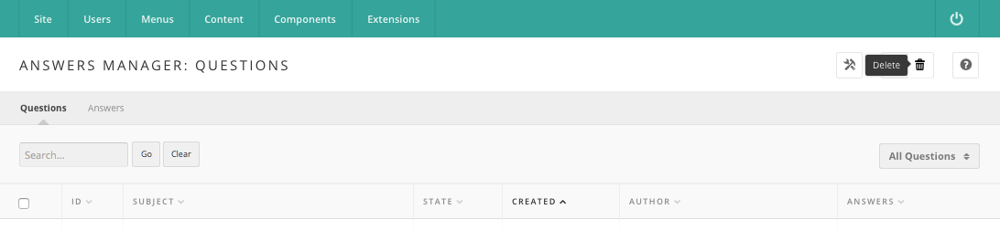

Hub managers
Answers
Answers is the hub's question-and-answer forum. Members post a question,
other members answer it, everyone votes answers up or down, and the person
who asked picks the answer that helped. On the site it appears as
Questions and Answers at /answers. This chapter covers the
administrator's side; the Hub users book covers
asking and answering.
Open it in the administrator interface under Components > Answers. Two sub-menu links sit at the top left: Questions, the default list, and Answers, the responses posted to those questions.
Questions
The Questions screen lists every question with its ID, Subject, State, Created date, Author, and Answers count. Click a column heading to sort by it; click again to reverse the order. The author column links to that member's record in the Members component and notes below the name when the question was posted anonymously. The answers count links to the Answers list filtered to that question.
Above the list, type a term in the search box and press Go to match it against question subjects and bodies, or use Filter by: to show Open Questions, Closed Questions, or All Questions. Clear resets the search.

The toolbar offers:
- Options — the component's configuration; see Options below. Shown only to administrators.
- New — open a blank question form.
- Delete — permanently remove the checked questions after a confirmation, along with their answers, comments, tags, and votes. There is no trash to recover from.
- Help — the built-in help screen.
Click the state icon in a row to toggle a question between open and closed. Closing a question is the same act the asker performs on the site by accepting an answer, except that no answer is marked as chosen and, when banking is on, no points are distributed.
Creating or editing a question
Click a subject, or New, to open the question form.
Details
| Field | Notes |
|---|---|
| Anonymous | Hides the author's name from other members on the site. Managers still see it here. |
| Notify of responses | Whether the asker is messaged when an answer or comment is posted. Questions asked on the site always have this set. |
| Subject | Required. The one-line question. Maximum 250 characters. |
| Question | Optional. The longer version, with details, written in the editor. |
| Tags | Required. A comma-separated list. Saving without at least one tag fails with an error and returns you to the form. |
Parameters
| Field | Notes |
|---|---|
| Creator | The numeric user ID of the member credited with the question. Defaults to your own ID on a new question. |
| Created | The timestamp, YYYY-MM-DD hh:mm:ss, picked from the calendar control. |
| State | Open or Closed. Trashed and reported questions cannot be set from this list. |
The panel beside the form shows the question's ID and, for a saved question, its creation date and the creator's name.
Press Save to save and stay, Save & Close to return to the list, or Cancel to discard changes.
Answers
The Answers sub-menu link lists the responses members have posted. With no question chosen it shows Responses to all questions; reached from a question's answer count it is filtered to that question, whose ID and subject head the table and link back to the question.
Columns are ID, Answer (the first 75 characters, stripped of markup), Accepted, Created, Author, and Helpful, which shows the up and down vote totals. Filter by: offers All Responses, Accepted Response, and Unaccepted Responses.
The toolbar offers New (only when the list is filtered to one question), Edit, Delete, and Help. Click the accepted icon in a row to accept or reject that answer. Accepting marks the answer as chosen, clears the mark from any other answer to the same question, and closes the question; a question can have only one accepted answer, so checking more than one row and accepting is refused.
Creating or editing an answer
Details
| Field | Notes |
|---|---|
| Anonymous | Hides the responder's name from other members on the site. |
| Question | The subject of the question being answered. Read-only. |
| Answer | Required. The response text, written in the editor. |
Publishing
| Field | Notes |
|---|---|
| Accept | Marks this response as the chosen answer. |
| Creator | The numeric user ID of the member credited with the answer. |
| Created | The timestamp, picked from the calendar control. |
The panel beside the form shows the answer's ID, its creation date and creator, and its Helpful totals. When either total is above zero, a Reset Helpful button appears; it zeroes both counts and deletes the vote log for that answer, so members may vote on it again.
Comments
Members can reply to an answer, and reply to those replies, up to three levels deep. These comments live in the hub's shared item-comment table and have no administrator screen of their own. A comment reported as abusive becomes a support ticket and is hidden behind a notice on the site until the ticket is resolved; the same is true of a reported question or answer. See Support.
Options
The Options button opens four settings, listed with their values in the configuration reference:
| Option | Effect |
|---|---|
| About points | The address of the page explaining the point system. Every "What are points?" and "Learn more" link on the site points here. Defaults to /kb/points. |
| Users notified on every activity | A comma-separated list of usernames messaged whenever a question or answer is posted. |
| Restrict accounts to create new posts | Disabled, or Enabled to block new accounts. |
| Minimum number of days to post | With the restriction enabled, how old an account must be before it may post. |
The Permissions tab sets, per access group, who may administer the
component, manage it (which gates the administrator screens entirely),
create, delete, edit, edit their own, and change the state of questions and
answers. On the site these same actions decide who sees the New
Question button, who may save a question, and who may delete one:
a member can delete their own question with core.delete, and anyone with
core.manage can delete any of them.
Points and rewards
Everything about rewards only appears when banking is switched on in the Members component (Bank accounts). With it off, no reward field, point breakdown, or "Rewards" sort is rendered anywhere.
With banking on, each question carries a market value calculated from its answers, votes, and recommendations, and the asker may put a bonus reward on top from their own balance. The reward is held, not spent, until the question closes. When the asker accepts an answer, the accumulated value is split three ways: a third to the asker, a third to the writer of the accepted answer, and a third shared among other answers that drew at least three votes with a majority positive — or added to the accepted answer when no other answer qualifies. Deleting a question releases the hold and adjusts the asker's credit back.
Modules and plugins
Five site modules draw on this component: mod_answers,
mod_recentquestions, mod_popularquestions, mod_myquestions, and
mod_featuredquestion. Two answers plugins add the site's extra filters:
answers-tools supplies "Questions related to my contributions" and
notifies tool authors of questions tagged with their tools, and
answers-members supplies "Questions tagged with my interests". Without
them, those filters return nothing. The resources-questions and
publications-questions plugins put a Questions tab on resource and
publication pages, tags-answers includes questions in tag results,
search-questions includes them in site search, and support-answers
handles abuse reports.
API
The component exposes /api/answers/questions for listing, reading,
creating, updating, and deleting questions; see the
API reference. The site also publishes an
RSS feed of the newest questions at /answers/latest.rss.
Rewritten and checked against 2.4-main @ ddeb90135f on 2026-09-09.